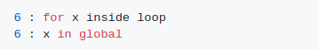
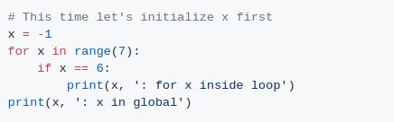

1.
Output:
하지만 x는 반복문 밖의 영역에서 정의되지 않습니다..
2.
Output:
3.
Output (on Python 2.x):
Output (on Python 3.x):
Python에서, for-loops는 그들이 존재하는 범위를 사용하고 그들의 정의된 루프 가변성을 뒤에 남긴다. 이는 이전에 글로벌 네임스페이스에서 루프용 변수를 명시적으로 정의한 경우에도 적용된다. 이 경우 기존 변수를 재귀결한다.
목록 이해 예제를 위한 Python 2.x와 Python 3.x 변환기의 출력 차이는 Python 3.0의 새로운 특징 문서에 설명된 변경사항으로 설명할 수 있다.